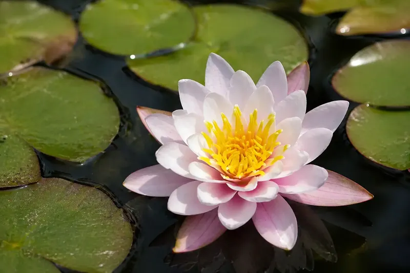

Растения для пруда
Нимфея “Марлиацея Карнеа”
Цена и наличие
- C2-C530 BYN / шт.В наличии
Данные на 23.11.2026.
Характеристики
- Размер сорта
- Крупный
- Глубина посадки
- 30-70 см
- Диаметр цветка
- 10-14 см
- Диаметр покрытия воды
- 1-1,2 м
- Тип корневища
- Rhizome
Описание
Нимфея ‘Марлиацеа Карнеа’ (Nymphaea ‘Marliacea Carnea’), он же Марлиаса Карнеа, Марлиацея Карнеа — один из старейших и наиболее проверенных временем сортов зимостойких водяных лилий, выведенный французским селекционером Латур-Марлиаком в XIX веке.
Нимфея ‘Марлиацеа Карнеа’ (Nymphaea ‘Marliacea Carnea’), он же Марлиаса Карнеа, Марлиацея Карнеа — один из старейших и наиболее проверенных временем сортов зимостойких водяных лилий, выведенный французским селекционером Латур-Марлиаком в XIX веке. Этот сорт отличается элегантными, светло-розовыми цветками с лёгким переходом в белизну по краям лепестков, что придаёт им утончённый и нежный вид. Центр цветка украшен ярко-жёлтыми тычинками, создающими гармоничный контраст с мягкими пастельными оттенками лепестков. Диаметр цветка составляет около 10–14 см, сами цветки плавают на поверхности воды или немного приподнимаются над ней в ясную погоду. Цветение продолжается с июня по сентябрь и отличается регулярностью и обилием. Листья округлые, тёмно-зелёные, с возможными коричневыми пятнами у молодых листьев, плавающие, образуют плотную листовую розетку, покрывающую воду в радиусе до 1–1,2 метра. Этот сорт требует посадки на глубине от 30 до 70 см и предпочитает солнечные места, но может мириться с лёгкой полутенью. Корневая система у ‘Марлиацеа Карнеа’ — ризома, что делает растение полностью зимостойким в умеренном климате при условии, что корневище находится ниже уровня промерзания. Благодаря своей неприхотливости, устойчивости к болезням и выносливости, а также изысканной окраске, нимфея ‘Марлиацеа Карнеа’ широко используется в декоративных прудах и считается идеальным выбором для начинающих владельцев водоёмов, а также для тех, кто ценит классическую садовую эстетику.